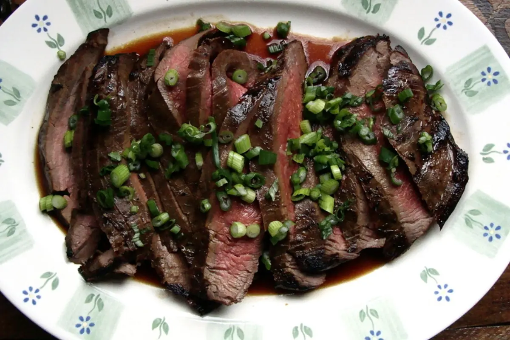

Ginger Soy Steak
- Serves4 to 6
- Ingredients8
- Steps4

Ingredients
For the marinade
- 1 teaspoon thinly sliced fresh ginger
- 1 clove garlic, thinly sliced
- 1 tablespoon sesame oil
- 1/4 cup soy sauce
- 1 teaspoon honey
- Salt and freshly grnd black pepper, to taste
For the steak and to serve
- 1 1/2 pounds flank steak
- 1/4 cup thinly sliced scallions
Directions
- Add all the marinade ingredients to a heavy duty zip-top plastic bag. Close bag and shake very well to combine. Add steak to bag and let marinate at least four hours or overnight.
- Preheat your oven broiler. Drain steak, reserving marinade, and place on a rack fitted inside a rimmed baking sheet. Cook steak under broiler 5 to 7 minutes, until nicely browned on top. Turn and cook an additional 5 to 7 minutes, for a medium rare doneness. Remove from oven cover steak loosely with foil, and let it rest for 5 minutes before slicing.
- Meanwhile, pour marinade into a small pot and bring to a boil. Cook for two minutes at a vigorous boil, then reduce to a simmer and cook for five more minutes—juices will reduce a bit.
- Slice the steak on a diagonal (against the grain) and arrange on a platter. Pour the reduced juices over the steak slices and scatter sliced scallions over top to serve. Note: If it's grilling season, then by all means this can also be cooked on a preheated gas grill or prepared charcoal grill!
Recipe credit: food52.com